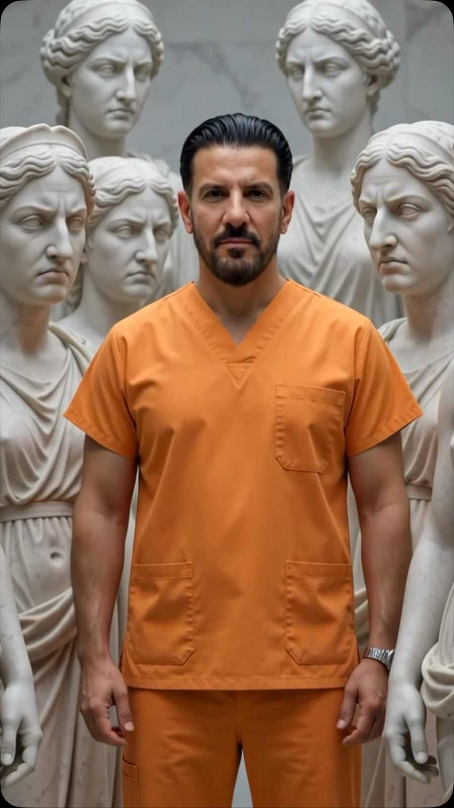
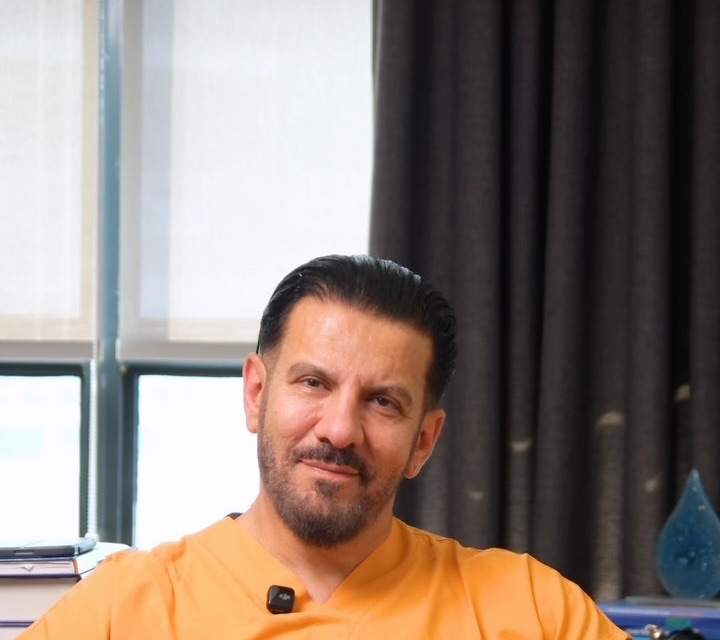
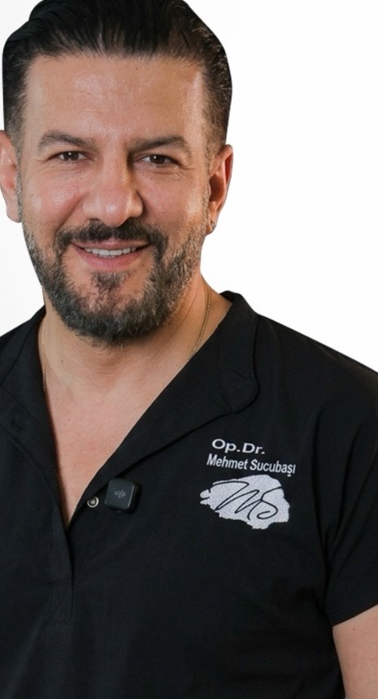

Ultrasonik rinoplasti
Kemik yapı ultrasonik titreşimle çalışan cihazlarla şekillendirilir; çevre dokuları koruyarak daha kontrollü bir şekillendirme hedeflenir.
Op. Dr. Mehmet Sucubaşı · KBB ve Baş Boyun Cerrahisi Uzmanı



1975 Reyhanlı, Hatay doğumlu Op. Dr. Mehmet Sucubaşı, burun estetiği ameliyatlarını ultrasonik piezo cerrahi yöntemiyle yapıyor. Amsterdam Üniversitesi'nde estetik burun cerrahisi, Graz Üniversitesi'nde endoskopik sinüs cerrahisi üzerine çalıştı.
Estetik açıdan küçültülen bir burnun nefes yolunu daraltmaması planlamanın temel önceliklerinden biri. Gerekli görülürse nefesi etkileyen sorunlar aynı seansta ele alınabilir; iki ayrı ameliyat yerine tek bir plan.
İki yöntem arasındaki temel fark kesinin yeridir. Tek bir yöntemin herkes için "en iyisi" olduğunu söylemek doğru değil; önemli olan burnun yapısına en uygun tekniğin seçilmesi.
| Özellik | Açık | Kapalı |
|---|---|---|
| Kesi yeri | Burun ile dudak arası (kolumella) ve burun içi | Yalnızca burun içi |
| Dışarıdan iz | Zamanla belirginliğini yitiren ince bir iz | Görünür iz yok |
| Şişlik ve morluk | Görece daha fazla | Genellikle daha az |
| Uygun durumlar | Karmaşık burun ucu düzeltmeleri, bazı revizyonlar | Uygun yapıdaki birçok primer rinoplasti |
Uygunluk kararı mutlaka muayene sonrasında, burnun dış görünümü ve iç yapısı incelenerek verilir.
Kemik yapı ultrasonik titreşimle çalışan cihazlarla şekillendirilir; çevre dokuları koruyarak daha kontrollü bir şekillendirme hedeflenir.
Uygun hastalarda burun sırtını koruyarak kemeri aşağı indirmeye dayanan, koruyucu rinoplasti yaklaşımları.
Burun sırtına dokunmadan yalnızca burun ucunun biçimi, yüksekliği veya açısı düzeltilir.
Daha önce ameliyat olmuş burunlarda estetik veya fonksiyonel sorunların giderilmesine yönelik ikincil ameliyat.
Travma veya gelişimsel nedenlerle yana kaymış burnun hem dış görünümü hem iç yapısı düzeltilir.
Burun sırtındaki kemerin yüz profiliyle uyumlu olacak şekilde azaltılması.
İyi bir burun estetiğinin en belirgin özelliği, ameliyat edildiğinin fark edilmemesi. Burun tek başına değil, yüzün bütünüyle birlikte değerlendirilir. Çubuğu kaydırın: burun ucu yönü değiştikçe burun ile dudak arasındaki açı da değişir.
Çizim yalnızca açının kavramını göstermek içindir; her yüz için uygun ölçü muayenede belirlenir.
Burnun dış yapısı ve burun içi değerlendirilir; nefesi engelleyen sorunlar tespit edilir.
Burnun 7 farklı açıdan standart fotoğrafları çekilir.
Planlanan şekil değişikliği fotoğraf üzerinde gösterilir; beklenti somut bir görüntü üzerinden konuşulur.
Muayene bulguları ve simülasyonla ameliyatın şekli ve yöntemi birlikte netleşir.
Gerekli tetkikler yapılır, ilaçlar gözden geçirilir, ameliyat öncesi kurallar anlatılır.
Simülasyon bir hedef görselidir, birebir garanti değildir. Cilt kalınlığı, kıkırdak yapısı ve iyileşme kişiden kişiye değişir.
İyileşme her hastada biraz farklı seyreder. Zaman çizgisinde bir noktaya dokunun ya da sürükleyin.
Sitedeki bilgiler genel bilgilendirme amaçlıdır; tanı ve tedavi yerine geçmez. Uygun yöntem muayene sonrasında hekim tarafından belirlenir.